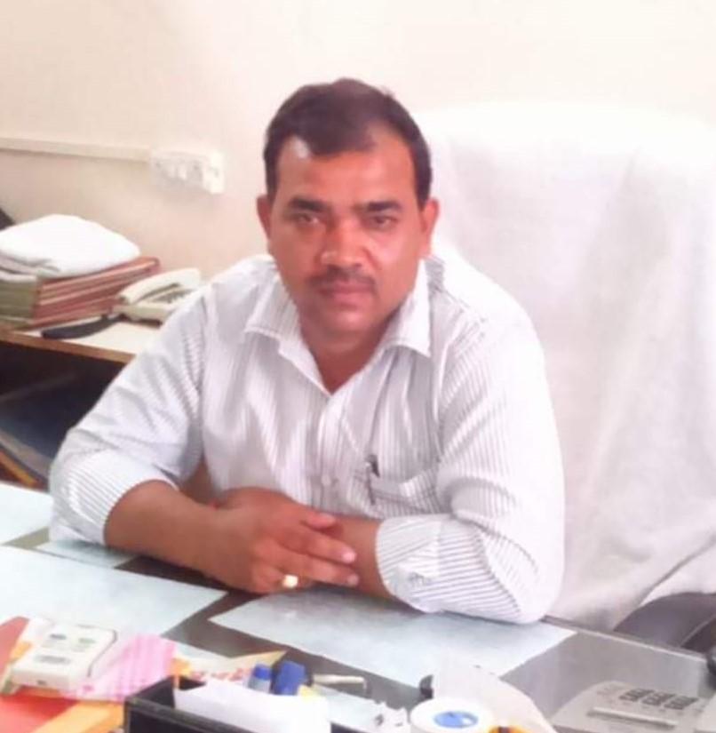

<div class="container" style="margin-top: 150px;">

    <div class="row center-block">

        <div class="col-lg-4 col-md-6 col-sm-12 ">
            <mat-card class="example-card">
                <mat-card-header>
                    <mat-card-title>Nitin Garg</mat-card-title>
                    <mat-card-subtitle>Chairman of Alpine Collage</mat-card-subtitle>
                </mat-card-header>
                
                <mat-card-content>
                    <p>
                        Nitin Garg is  Chairman of Alpine Collage of Education and his moto providing
                        Oppurtunities in rural areas in the field of education
                    </p>
                </mat-card-content>
            </mat-card>
        </div>
        <div class="col-lg-8 col-md-6 col-sm-12 d-flex justify-content-center">
            <h2>
                <h1 class="feature_title">Chairman Message </h1><br>Our goal is to change the world through education. It may sound
                 idealistic, but this is our mission. It is what motivates the work of 
                 everyone at Alpine College of Education from faculty and staff, to students and alumni,
                 to our parents and supporters. The system will also help youth and mankind make their own ethics to be followed in life.
               It is our mission to develop a positive brain compatible environment. We will work together as a team with the family, 
                 college, and community to encourage and motivate all students to reach their fullest potential. We are committed towards providing
                  excellent higher education, to change the students as ideal graduates who will be highly competent in their chosen fields.
            </h2>
        </div>


        <div class="col-lg-8 col-md-6 col-sm-12 d-flex justify-content-center">
            <h2>
                <h1 class="feature_title">Secretary Message </h1><br>  Education is the ability to meet life situations.
                 With resistance and diligence laced with knowledge and intellect, one can soar to any extent one desires. 
                 The thrust of education at Alpine Collage of Education is not only to produce mere degree holders but the 
                 bright young men and women equipped enough to foray into the world with an all round
                 development of personality. Our vision of the institutions is to impart quality education in all core disciplines
                  of knowledge by developing global leaders who are confident, smart, intelligent, gifted and engaged with life from
                  physics to football.


            </h2>
        </div>
        <div class="col-lg-4 col-md-6 col-sm-12 d-flex justify-content-center">
            <mat-card class="example-card">
                <mat-card-header>
                    <mat-card-title>Vinit Kumar Bansal</mat-card-title>
                    <mat-card-subtitle>Secretary of Alpine Collage</mat-card-subtitle>
                </mat-card-header>
                
                <mat-card-content>
                    <p>
                        Vinit Kumar Bansal is the Secretary of Alpine Collage of Education and his strong mission is 
                        Women Empowerment in everyfield.
                    </p>
                </mat-card-content>
            </mat-card>
        </div>


        <div class="col-lg-4 col-md-6 col-sm-12 d-flex justify-content-center">
            <mat-card class="example-card">
                <mat-card-header>
                    <mat-card-title>Kamal Garg</mat-card-title>
                    <mat-card-subtitle>Treasurer of Alpine Collage</mat-card-subtitle>
                </mat-card-header>
                
                <mat-card-content>
                    <p>   Kamal Garg Bansal is the Treasurer of Alpine Collage of Education and very intelligent person and
                        his ideas helps the faculty and students to tread the path of ‘innovation’
                </mat-card-content>
            </mat-card>
        </div>
        <div class="col-lg-8 col-md-6 col-sm-12 d-flex justify-content-center">
            <h2>
                <h1 class="feature_title">Treasurer Message </h1><br> Our motive is to develop a gobal perspective
                 to cope –up with the fast changing technology scenario. In addition to this, values with discipline are the hallmark
                  of our college, besides, ensuring quality of the students; here the emphasis is not only on academic excellence but
                   the development of the overall total personality of a student. To achieve this goal, add on courses, training in 
                   personality development, and other soft skills are also provided in our College. We take special care to ensure that
                    new ideas are not merely discussed here but executed. Execution of new ideas helps the faculty and students to tread
                     the path of ‘innovation’ which is the slogan of our Institution. As excellence is the only criterion for selection 
                of students, we are confident that in due course, promises will become ‘Achievements’ in their respective fields.
            </h2>
        </div>


    </div>


</div>